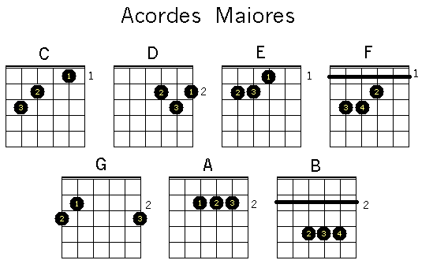

Formação de Acordes
A formação de acordes é baseada na combinação de três ou mais notas musicais que, quando tocadas simultaneamente, criam um som harmonioso. Os acordes são classificados de acordo com o tipo de intervalo entre suas notas.
Tipos de Acordes
Existem diversos tipos de acordes, incluindo acordes maiores, menores, diminutos e aumentados. Cada tipo de acorde possui uma sonoridade distinta e é utilizado em diferentes contextos musicais.
